|
Roda JC - Valencia CF (0-0) 3 augustus 2005
|
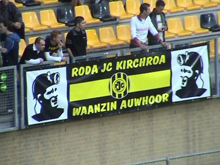
Waar kennen we dat logo van......?
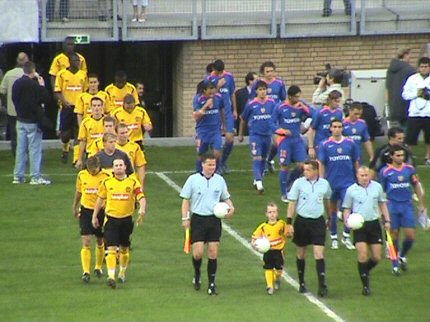
4000 toeschouwers en 22 spelers.
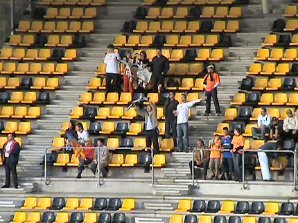
Een kleine 50 supporters van Valencia CF in het gastenvak. Ze vonden de
muziek in het PLS wel okay. Ook op noord zaten Spanjaarden.
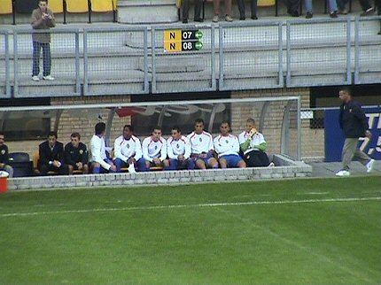
De reserves van Valencia, Kluivert kwam vanavond niet in actie.
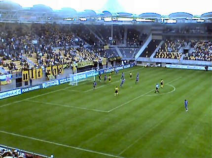
In de 7e min. vergeet Kone op de vrijstaande Sonko te passen. Gemiste
kans op een vroege treffer.
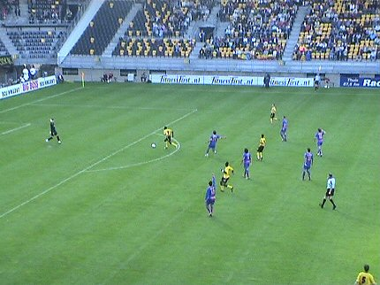
Een van de zeer vele buitenspel-momenten.
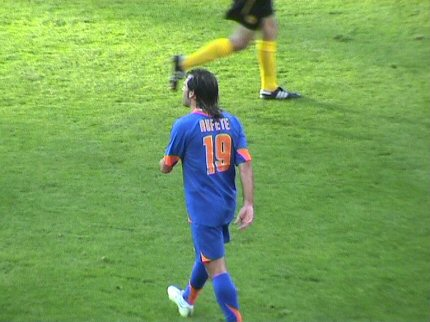
Rufete, de man die drie scoorde in Valencia had vanavond nauwelijks wat in
te brengen.
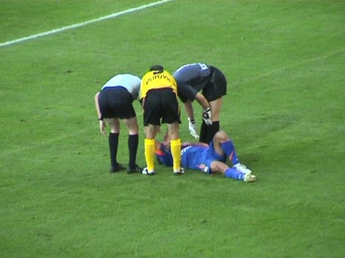
De Spanjolen gingen vaak en gemakkelijk liggen. Minpuntje!
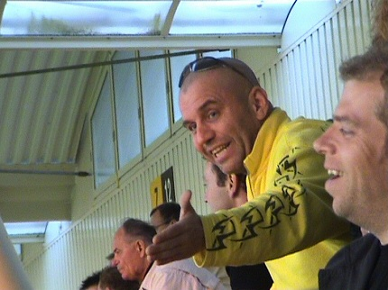
Izz heeft de pensioengerechtigde leeftijd bereikt en mag nu ook plaatsnemen
op Z16. 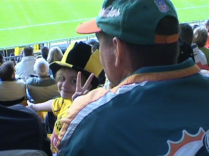
Kinderlokker probeert voor 2 euro aan zijn trekken te komen....
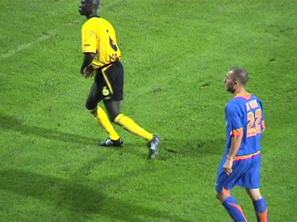
Kah had Di Vaio volledig onder controle.
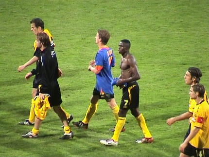
Aan Kah valt niet te tippen, maar Sonko beschikt inmiddels ook over een
zwaar afgetrainde body. De speler krijgt weinig krediet van het publiek maar
liet vanavond zien dat zijn oude kwaliteiten weer terugkomen. Nu nog iets
meer profiel onder de zolen....
Groeten van Timo aan Peggy M. Deze plaspauze is tevens het einde van
de wedstrijd, (afgezien van een goed gesprek met Pieter Baan), want de
Kick off was deze keer ALWEER gesloten.
© Koempels Pleasure Dome
|